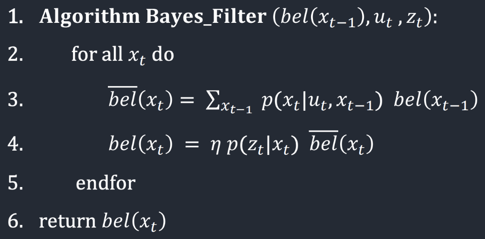

Lab 10: Localization (Simulation)
04.15.2025 - 04.22.2025
Grid Localization
Overview
Robot localization is the process of determining where a robot is located within its environment. Since robots don't have perfect knowledge of their position, we use sensors and probabilistic methods to estimate their location.
In this lab, we implement grid localization using a Bayes filter. The robot's position is represented by three values: x and y coordinates, and an orientation angle θ. To make calculations manageable, we divide the continuous space into a 3D grid with discrete cells.
Each grid cell measures 0.3048m × 0.3048m × 20°, creating a grid of 12×9×18 cells (1944 total cells). Each cell stores a probability value representing how likely it is that the robot is located in that position and orientation.
The cell with the highest probability after running the Bayes filter represents our best guess of where the robot is located. By tracking this highest-probability cell over time, we can follow the robot's movement through the environment.
Bayes Filter Algorithm
The Bayes filter is an iterative algorithm that updates the robot's belief about its state based on control inputs and sensor measurements. Each iteration consists of two major steps, the prediction step, which incorporates control input (movement) data to predict the new state, and the update step, which incorporates observation (measurement) data to refine the prediction
The prediction step typically increases uncertainty in the belief as motion introduces noise, while the update step reduces uncertainty by integrating sensor information. The belief calculated after the prediction step is called the prior belief.
The Bayes filter algorithm works with three key inputs: the previous belief bel(xₜ₋₁), the control input uₜ, and sensor measurements zₜ. The previous belief is stored as a 3D probability grid where each cell represents how likely it is that the robot occupies that specific position and orientation. The control input represents the robot's movement command, while the sensor measurements include 18 distance readings taken at 20-degree intervals around the robot. For each possible current robot pose xₜ, the algorithm performs the following steps:
First, it calculates the predicted belief bel̄(xₜ) by summing over all possible previous poses. For each previous pose, it multiplies the probability of transitioning from that pose to the current pose (given the control input) by the previous belief value.
Second, it updates this prediction with sensor information. It multiplies the predicted belief by the probability of getting the observed sensor readings if the robot were actually at the current pose, then normalizes the result using the factor η to ensure all probabilities sum to 1.
Implementation
compute_control
def compute_control(cur_pose, prev_pose):
""" Given the current and previous odometry poses, this function extracts
the control information based on the odometry motion model.
Args:
cur_pose ([Pose]): Current Pose
prev_pose ([Pose]): Previous Pose
Returns:
[delta_rot_1]: Rotation 1 (degrees)
[delta_trans]: Translation (meters)
[delta_rot_2]: Rotation 2 (degrees)
"""
cur_x, cur_y, cur_theta = cur_pose
prev_x, prev_y, prev_theta = prev_pose
delta_rot_1 = mapper.normalize_angle(np.degrees(np.arctan2(cur_y - prev_y, cur_x - prev_x)) - prev_theta,)
delta_trans = np.hypot(cur_y - prev_y, cur_x - prev_x)
delta_rot_2 = mapper.normalize_angle(cur_theta - prev_theta - delta_rot_1)
return delta_rot_1, delta_trans, delta_rot_2
The compute_control() function converts robot movement into the odometry motion model by comparing two poses. This model breaks any movement into three sequential steps.
1. Initial rotation (δrot1): The robot turns to face its destination
2. Translation (δtrans): The robot moves forward in a straight line
3. Final rotation (δrot2): The robot adjusts to reach the final orientation
Using pose tuples (x, y, θ) as inputs, the function calculates these parameters with NumPy's arctan2 and hypot functions, normalizing all angles to [-180°, 180°]. This representation allows us to accurately model and predict the robot's movement through space.
odom_motion_model
def odom_motion_model(cur_pose, prev_pose, u):
""" Odometry Motion Model
Args:
cur_pose ([Pose]): Current Pose
prev_pose ([Pose]): Previous Pose
(rot1, trans, rot2) (float, float, float): A tuple with control data in the format
format (rot1, trans, rot2) with units (degrees, meters, degrees)
Returns:
prob [float]: Probability p(x'|x, u)
"""
delta_rot_1, delta_trans, delta_rot_2 = compute_control(cur_pose, prev_pose)
prob_rot_1 = loc.gaussian(delta_rot_1, u[0], loc.odom_rot_sigma)
prob_trans = loc.gaussian(delta_trans, u[1], loc.odom_trans_sigma)
prob_rot_2 = loc.gaussian(delta_rot_2, u[2], loc.odom_rot_sigma)
return prob_rot_1 * prob_trans * prob_rot_2
The odom_motion_model() function calculates the probability of transitioning between poses by comparing actual and theoretical movements. First, it extracts the three odometry parameters (initial rotation, translation, final rotation) from both:
- The "actual" path taken by the robot based on sensor readings
- The "theoretical" path needed to move between any two grid states
It then treats each parameter as an independent Gaussian probability distribution, with means centered on the ideal movements and standard deviations representing expected motion noise. By multiplying these three probabilities together, we get the likelihood that the robot moved from a specific previous state to the current state given the recorded control input. This probabilistic approach handles the inherent uncertainty in robot movement.
prediction_step
def prediction_step(cur_odom, prev_odom):
""" Prediction step of the Bayes Filter.
Update the probabilities in loc.bel_bar based on loc.bel from the previous time step and the odometry motion model.
Args:
cur_odom ([Pose]): Current Pose
prev_odom ([Pose]): Previous Pose
"""
u = compute_control(cur_odom, prev_odom)
loc.bel_bar = np.zeros((mapper.MAX_CELLS_X, mapper.MAX_CELLS_Y, mapper.MAX_CELLS_A))
for prev_x in range(mapper.MAX_CELLS_X):
for prev_y in range(mapper.MAX_CELLS_Y):
for prev_theta in range(mapper.MAX_CELLS_A):
if (loc.bel[prev_x, prev_y, prev_theta] < 0.0001): continue
for cur_x in range(mapper.MAX_CELLS_X):
for cur_y in range(mapper.MAX_CELLS_Y):
for cur_theta in range(mapper.MAX_CELLS_A):
p = odom_motion_model(
mapper.from_map(cur_x, cur_y, cur_theta),
mapper.from_map(prev_x, prev_y, prev_theta),
u
)
loc.bel_bar[cur_x, cur_y, cur_theta] += p * loc.bel[prev_x, prev_y, prev_theta]
loc.bel_bar /= np.sum(loc.bel_bar)
The prediction_step() function calculates the robot's probable locations after movement by:
1. Extracting the actual movement parameters from odometry readings
2. Computing a new belief distribution by systematically examining all possible state transitions
3. For each current grid cell (x, y, θ), it evaluates the probability of arriving there from every previous cell
4. These probabilities are multiplied by the previous belief values and summed to create the predicted belief bel―
sensor_model
def sensor_model(obs):
""" This is the equivalent of p(z|x).
Args:
obs ([ndarray]): A 1D array consisting of the true observations for a specific robot pose in the map
Returns:
[ndarray]: Returns a 1D array of size 18 (=loc.OBS_PER_CELL) with the likelihoods of each individual sensor measurement
"""
return [loc.gaussian(obs[i], loc.obs_range_data[i], loc.sensor_sigma)
for i in range(mapper.OBS_PER_CELL)]
This function takes an array of true observations (obs) for a specific robot pose It returns an array of 18 values (one for each sensor measurement direction) Each value represents the likelihood of that sensor reading given the true state It uses a Gaussian distribution with mean = the true observation value and standard deviation = loc.sensor_sigma
update_step
def update_step():
""" Update step of the Bayes Filter.
Update the probabilities in loc.bel based on loc.bel_bar and the sensor model.
"""
for cur_x in range(mapper.MAX_CELLS_X):
for cur_y in range(mapper.MAX_CELLS_Y):
for cur_theta in range(mapper.MAX_CELLS_A):
p = sensor_model(mapper.get_views(cur_x, cur_y, cur_theta))
loc.bel[cur_x, cur_y, cur_theta] = np.prod(p) * loc.bel_bar[cur_x, cur_y, cur_theta]
loc.bel /= np.sum(loc.bel)
The update_step() function implements the update phase of the Bayes Filter. It iterates through every possible robot position in the discretized environment (x, y coordinates and orientation θ) and updates the posterior belief (loc.bel) based on the predicted belief (loc.bel_bar) and current sensor measurements. For each potential position, the function:
1. Retrieves the expected observations using mapper.get_views()
2. Calculates the likelihood of the actual sensor readings using sensor_model()
3. Computes the product of these individual sensor likelihoods using np.prod(p)
4. Multiplies this likelihood by the prior belief (loc.bel_bar) for that position
5. Finally normalizes the entire belief distribution to ensure it sums to 1
This updated posterior belief represents the robot's refined estimation of its position after incorporating both motion prediction and sensor information, completing one full cycle of the Bayes Filter.
Simulation
Here is a video that shows a trajectory and localization simulation without a Bayes filter. We can tell that the odometry model is not great, as it wanders outside of the bounds of the map.
Here are two videos of successful localization runs with Bayes.
Notes and Conclusion
I referenced Stephen Wagner's lab report, and got some help from Sana Chawla.